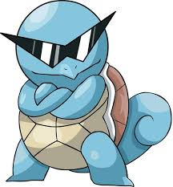

Squirtle é um dos Pokémon iniciais da primeira geração, introduzido nos jogos Pokémon Red e Blue. É um Pokémon de tipo Água, com a aparência de uma pequena tartaruga azul-clara. Possui um casco que o protege e pode evoluir para Wartortle e, finalmente, Blastoise.